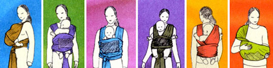

Tinokis
Experts recommend carrying your precious baby as close to your body as possible. In Hebrew, TINOKIS means "baby pocket".
Carrying your baby with Tinokis from the very first days of Baby's life helps to maintain the feeling of warmth and security that your baby experienced in the womb.
* Tinokis will help build a bond between parent and child.
* Tinokis allows you to free your hands while carrying your baby.
* Tinokis is made of natural material only.
* Tinokis is comfortable for both carrier and baby, easy to use, easy to clean, and easy to carry.
* Provides 11 different ways to carry your infant or toddler.
* Includes a pocket for small things that you want to carry with you and your baby. matching storage sack and detailed instruction booklet included

|